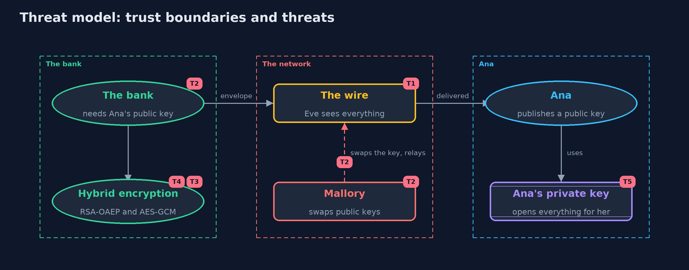

Threat Model — Asymmetric Encryption (RSA and Key Agreement)
A threat model answers four questions: what are we protecting, who or what could harm it, how, and what do we do about it. This one covers this project's own demo system, not a production deployment. Domain: an online bank.
Scope
How an online bank gets an encrypted statement to a customer it has never met: the customer's public key, RSA-OAEP, hybrid encryption with AES-GCM, and X25519 key agreement with HKDF. It covers eavesdropping, tampering with messages, and swapping a public key. It does not cover how a public key is proved to be the customer's, how private keys are stored, or TLS.
What we protect (assets)
- The contents of each statement.
- The customer's private key.
- The authenticity of the customer's public key.
- The session keys made by key agreement.
Who and what acts on the system
- The bank, which locks messages to a public key.
- Ana, who publishes a public key and keeps a private one.
- Eve, who reads everything on the network.
- Mallory, who can change what is on the network, including a public key in transit.
Trust boundaries
A trust boundary is a line that data or a request crosses between parts that trust each other differently. Threats cluster where those lines are.
- Bank to network: only envelopes and public keys cross it.
- Ana's device to the network: her private key never crosses it.
- Public key to its owner: the line the maths cannot draw.

Each dashed box is a trust boundary. A rose tag such as T1 shows where the threat of that number, in the table below, applies.
Threats, using STRIDE
STRIDE is a checklist of six kinds of threat: Spoofing (S), Tampering (T), Repudiation (R), Information disclosure (I), Denial of service (D), Elevation of privilege (E).
| Id | Kind | Threat | Where it shows up | Control in this project | What is left |
|---|---|---|---|---|---|
| T1 | Information disclosure | Eve reads a key or a statement on the network | Wire |
No key is sent in the clear: RSA-OAEP locks it, or key agreement makes it, and AES-GCM hides the data | Eve still sees sizes and timing, and who talks to whom |
| T2 | Spoofing | Mallory swaps Ana's public key for her own | HybridBox.seal, the bank's copy of Ana's public key |
None in this project, by design | Signatures and certificates, in the next projects, prove whose public key it is |
| T3 | Tampering | A message is changed in transit, or moved to another account | HybridBox.open |
AES-GCM's tag covers the cipher text and the associated data | An old valid message can be replayed |
| T4 | Information disclosure | RSA is used without padding, or on long data | RsaBox |
OAEP is always used and at most 190 bytes are locked; data goes under AES | A different caller could bypass the helper, so code review should look for raw RSA |
| T5 | Information disclosure | Ana's private key is stolen, and past messages are opened | Ana's private key | With key agreement and fresh keys each session, a stolen long-term key does not reveal old sessions | Messages locked to a long-term RSA key stay readable by a thief of that key |
Assumptions
- Private keys are not stolen.
- RSA-2048, X25519, AES-256-GCM and HKDF-SHA-256 are sound at this key size.
- In the demo, keys are fresh and random on each run, and the man in the middle is a few lines of code.
Out of scope
- Certificates and signatures: they are the next projects.
- Storing private keys: the keystore project.
- Quantum computers, which would break RSA and X25519.
How the tests check this
StandardVectorsTestchecks X25519 against RFC 7748 and HKDF against RFC 5869.RsaTestchecks lock and unlock, other keys, OAEP's randomness, the 190-byte limit and sizes.HybridTestchecks large messages, envelope sizes, per-message keys, refusals and the man in the middle.KeyAgreementTestchecks both sides agree, an eavesdropper's key differs, and new sessions give new keys.
Where this model goes next
The next project, digital-signatures, answers the question left open here: how a message can come with proof of who made it, so that a public key can be trusted.